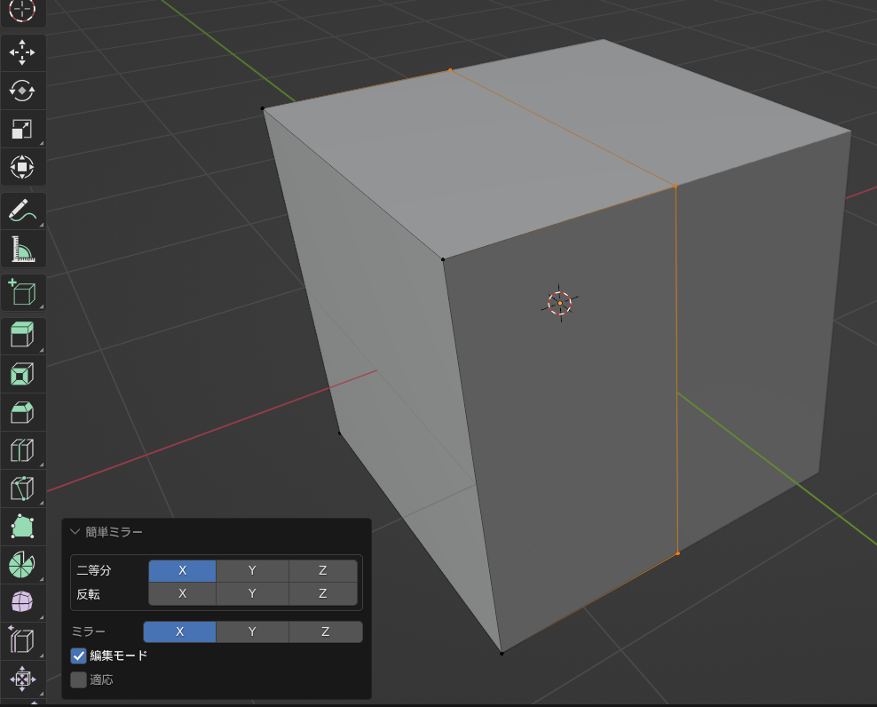
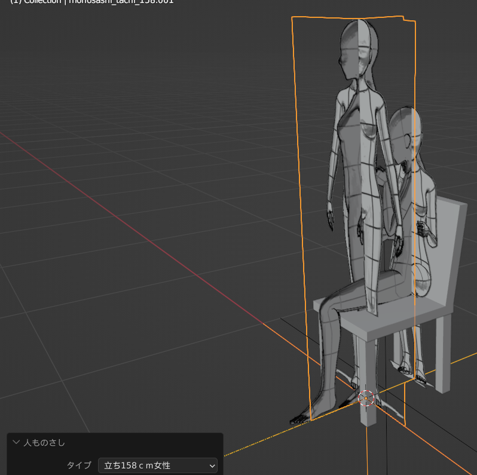
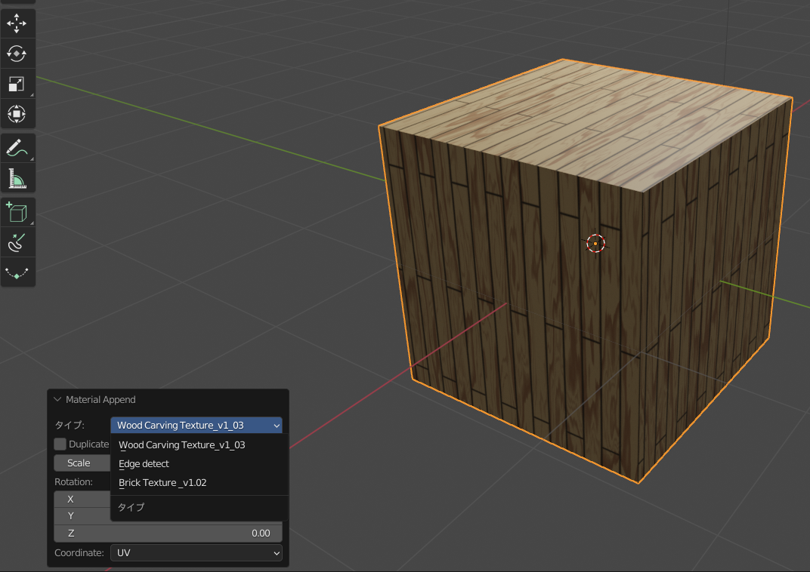

KSYN OPSその他の機能
ミラー機能
普通のミラー機能ですが、 自動で二等分していますので、メッシュの自動整形にとても便利です。 反転ボタンを押すと指定の軸に沿って反転します。
人ものさし
クリップスタジオの人形に合わせた、オブジェクトを作成できます。 クリップスタジオのモデルとほぼ同じ寸法ですので、クリスタのエクスポートの際にとても便利なアセット機能です。
エンプティの挿入
選択されたオブジェクトの親にエンプティを挿入できます。 つかみやすいに用にデフォルトで矢印を採用してあります。
マテリアルの適応
選択されたオブジェクトに三種類のマテリアルを適応できます。 詳細はマテリアルの設定でお願いします。